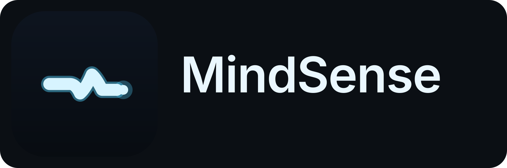
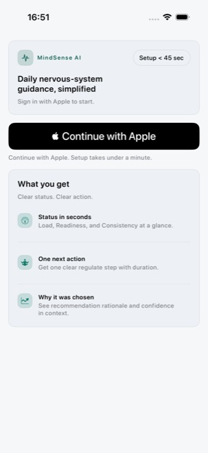
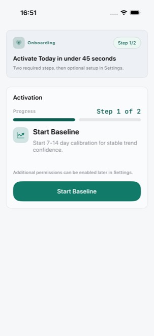
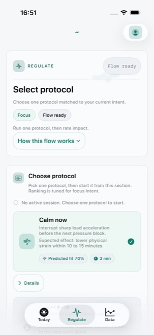
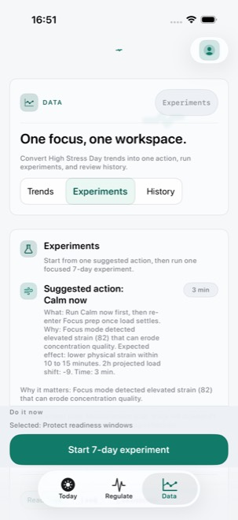
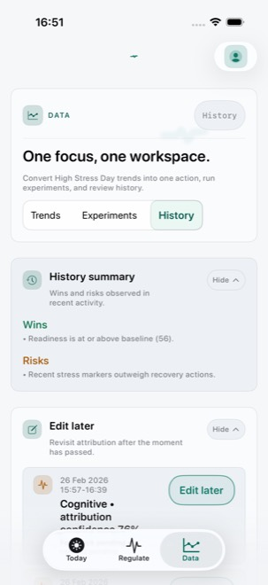
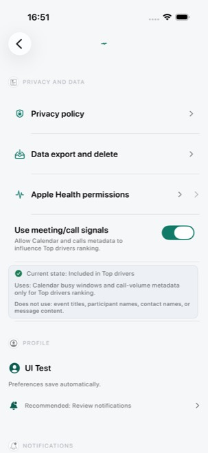

0
Target seconds to identify one next action

Book walkthroughMindSense AI v1.0.0 · As-built product site
MindSense AI is a local-first iOS app that helps users read current state, run one short protocol, capture impact, and improve recommendation confidence over time.
Current production navigation: Today, Regulate, Data. MindSense is wellness support and does not replace emergency care.
Product Overview
0
Target seconds to identify one next action
0
Core runtime tabs wired in production
0
Required onboarding activation steps
0
UI-test-exported screenshots mapped below
0
Simulator latency budget (ms) in UI tests
Today
Command deck prioritizes one action path while still exposing confidence, signal diagnostics, context capture, and timeline review.
Regulate
Presets are ranked from scenario + metrics + history. Session moves from Select → Run → Record with a focused timer and impact capture.
Data
Submodes for Trends, Experiments, and History consolidate behavior evidence and next actions.
Core Loop
This is the implemented daily structure in v1.0.0. Use the stepper to inspect each stage.
01
Today surfaces current metrics and one recommended path.
02
Regulate guides preset selection and timed execution.
03
Capture helped/mixed/did-not-help and optional context.
04
Data trends and experiments adapt future confidence.
Step 1
MindSense keeps one primary action visible and routes deeper diagnostics behind deliberate interactions.
App Walkthrough
Every screen below maps to real `MindSenseCoreScreensUITests.testMarketingWebsiteScreenshotExport()` output.

Entry
Introduces the value model and starts account setup with one primary path.





Who This Is For
Same product loop, different evidence lenses. Switch audience tracks to view the most relevant narrative.
For prospective users
MindSense reduces decision overhead: understand current state, run one short protocol, then check whether it helped.
Trust, Safety, and Quality
FAQ
No. MindSense is currently positioned as a wellness product and does not replace licensed clinical or emergency care.
Today, Regulate, and Data are wired as primary runtime tabs, with Settings reachable from the profile menu.
The app surfaces recommendation confidence, data coverage, signal diagnostics, and low-coverage behavior prompts.
No. The post-activation paywall is presentation-level, cloud sync is not implemented, and health diagnostics are currently simulated.
Use local emergency services immediately. In the United States, call or text 988 for crisis support.
Contact
Get launch updates and early access opportunities.
Walk through Today, Regulate, Data, and Settings with the team.
Review trust posture, operational fit, and rollout constraints.
Request architecture, quality, and milestone evidence package.